entrega-11-08Quando uma máquina pesada pára numa pedreira, muitas vezes o operador liga ou envia mensagens soltas à assistência (WhatsApp, e-mail) sem número de série, sem fotos organizadas e sem contexto. O fabricante perde tempo a perceber qual a máquina, a versão e o problema, e não existe histórico estruturado por equipamento. Além disso, as pedreiras têm frequentemente pouca ou nenhuma cobertura.
O FixTag dá a cada máquina um histórico de ocorrências. O operador reporta a avaria no local, com descrição, gravidade, fotos, áudio e localização, mesmo sem rede, e o fabricante acompanha-a até estar resolvida.
Esta entrega continua a de 27/10, que apresentou a variante demo, só com dados locais, e o protocolo experimental sobre persistência local e funcionamento offline. Nessa altura, a aplicação tinha um só cliente e um só fabricante. Agora há vários de cada, e um cliente pode ter máquinas de fabricantes diferentes. A assistência atribui as ocorrências a técnicos, o autor de uma ocorrência pode editá-la, os gestores criam as contas da sua organização e a variante full liga-se à API do servidor para sincronização e operações que precisam do mesmo para funcionar.
Variante demo |
Variante full |
|
|---|---|---|
| Build variant | demoDebug |
fullDebug |
| Servidor | não precisa | a API da pasta backend/ |
| Dados | criados no dispositivo na primeira utilização | sincronizados com o servidor |
| Entrar | escolher um dos 13 perfis de exemplo | e-mail e palavra-passe |
As instruções para abrir, compilar e testar o projeto estão no README.md.
| Perfil | Organização | O que pode fazer |
|---|---|---|
| Operador | cliente | reportar ocorrências nas máquinas da sua organização e editar as que reportou |
| Gestor | cliente | o mesmo que o operador, e criar as contas da sua organização |
| Assistência | fabricante | ver as ocorrências que o fabricante trata, atribuir técnicos, mudar o estado, registar clientes e máquinas, criar contas de técnicos |
| Técnico | fabricante | ver as ocorrências que reportou ou que lhe foram atribuídas, e mudar o estado das que lhe estão atribuídas |
| Gestor | fabricante | o mesmo que a assistência, e criar contas de qualquer perfil do fabricante |
A ocorrência é o registo principal. Tem um identificador único (UUID gerado no dispositivo), a descrição, a gravidade (baixa, média ou crítica), o estado (recebida, em análise ou resolvida), a localização, os anexos e as datas reported_at, created_at e updated_at.
| Operação | Ecrã | Notas |
|---|---|---|
| Criar | NewIncidentFragment |
máquina, descrição, gravidade, fotos, áudio e localização |
| Listar | IncidentsFragment |
só as que o perfil pode ver (secção 5.2) |
| Ver detalhes | IncidentDetailFragment |
estado, técnico atribuído, anexos e histórico de atualizações |
| Editar | NewIncidentFragment, em modo de edição |
só o autor: descrição, gravidade e localização |
| Atualizar | IncidentDetailFragment |
mensagem, novo estado e técnico atribuído |
| Eliminar | lista de ocorrências | só enquanto não foi enviada ao servidor, e com confirmação |
Um caso de uso de ponta a ponta: numa pedreira sem rede, o operador escolhe a máquina avariada, descreve o problema, indica a gravidade e junta uma foto e uma gravação de áudio. A ocorrência fica guardada no telemóvel com o estado «recebida» e, na variante full, segue para o servidor assim que houver ligação. No fabricante, a assistência vê-a na lista, abre o detalhe e atribui-a a um técnico; a atribuição fica no histórico. O técnico passa-a a «em análise» enquanto trabalha nela e a «resolvida» no fim, com uma mensagem sobre o que foi feito. O operador acompanha cada passo no detalhe da ocorrência. Na variante demo, o mesmo percurso faz-se num só telemóvel, mudando de perfil.
| # | Requisito | Como o FixTag o cumpre |
|---|---|---|
| 1 | Android Studio, API 29, Java ou Kotlin | Kotlin, minSdk = 29 em app/build.gradle.kts |
| 2 | Pelo menos duas Activities ou Fragments | LoginActivity e MainActivity, com 12 fragmentos |
| 3 | Interface coerente | Material 3, navegação por separadores, modo claro e escuro (secção 8) |
| 4 | Introduzir e visualizar dados | formulários de ocorrência, máquina, cliente e conta; listas e ecrãs de detalhe |
| 5 | Adicionar, editar e eliminar | secção 2.2 |
| 6 | Armazenamento local | Room (SQLite) para os registos, ficheiros internos para os anexos (secção 4) |
| 7 | Dados mantidos depois de fechar | tudo fica no Room; a sessão fica no DataStore |
| 8 | Validação com mensagens claras | erro no próprio campo, ou mensagem quando não é de nenhum campo (secção 7) |
| 9 | Confirmação antes de eliminar | diálogo de confirmDeletePending, em ui/Helpers.kt |
| 10 | Textos em strings.xml |
values/ (inglês) e values-pt/ (português) |
| 11 | Diferentes dimensões de ecrã | listas em RecyclerView, formulários com scroll, pesos em vez de tamanhos fixos |
| 12 | Sem Internet nas funções principais | a variante demo não usa rede; na full, reportar e editar funcionam offline e sincronizam depois |
| Mecanismo | O que guarda | Onde |
|---|---|---|
| Room (SQLite) | organizações, utilizadores, máquinas, ocorrências, atualizações e anexos | data/Database.kt, data/model/ |
| DataStore (Preferences) | o perfil escolhido, na variante demo | data/Session.kt |
| Ficheiros internos | fotos e áudio | files/attachments/ |
Room, tabela Auth |
os tokens de sessão, na variante full | data/model/Auth.kt |
Os registos do FixTag estão ligados entre si: uma ocorrência pertence a uma máquina, a máquina pertence a um cliente e foi fabricada por um fabricante, e cada ocorrência tem atualizações e anexos. O Room guarda-os em SQLite com chaves estrangeiras, por isso não pode ficar uma atualização ou um anexo sem a sua ocorrência.
As listas precisam de consultas filtradas e com junções, como as ocorrências que um perfil pode ver, cada uma com a sua máquina, ou as máquinas com o número de ocorrências dos últimos 30 dias. Com ficheiros ou SharedPreferences, isto obrigaria a ler tudo para memória e a filtrar à mão. As escritas que tocam em várias tabelas, como uma ocorrência com os seus anexos, são feitas numa transação: fica tudo guardado ou nada. Por fim, os DAO devolvem Flow, e a interface atualiza-se sozinha sempre que os dados mudam, seja por uma ação do utilizador, seja pela sincronização.
O DataStore guarda apenas o perfil escolhido na variante demo, o uso que o enunciado prevê para preferências e configurações.
A base de dados está na versão 2, com fallbackToDestructiveMigration. Os dados de exemplo da variante demo são criados só quando a base de dados está vazia, por isso o que se altera durante a demonstração mantém-se entre utilizações.
A migração destrutiva é aceitável nesta fase porque nenhum telemóvel tem dados que não se possam recriar: na variante demo, os dados de exemplo voltam a ser criados, e na variante full a sincronização volta a descarregar tudo do servidor. A exceção é o que ainda estiver por enviar, que se perde, como mostra a experiência E5 do protocolo de 27/10. Quando houver utilizadores reais, cada versão nova do esquema terá uma Migration explícita, ou uma AutoMigration quando o Room a conseguir gerar, testada a partir dos esquemas exportados em app/schemas/.
Cada registo que o telemóvel envia ao servidor tem um sync_status: Pending, Synced ou Failed. Criar ou editar escreve só no Room, com o estado Pending, e pede ao SyncScheduler uma sincronização. O WorkManager só a corre quando há rede; além disso, há uma sincronização periódica a cada 15 minutos. As listas mostram quantos registos faltam enviar.
O SyncWorker envia primeiro o que está pendente e só depois descarrega o que falta, pela ordem das chaves estrangeiras do servidor: organizações, máquinas, ocorrências e, por fim, atualizações e anexos. Organizações, máquinas, ocorrências e anexos seguem num PUT com o UUID gerado no telemóvel, por isso enviar o mesmo registo duas vezes não cria um duplicado. As ocorrências chegam por páginas, e o cursor da última fica na tabela sync_state, para a sincronização seguinte continuar a partir daí. Os pedidos levam um token de acesso; quando expira, o Authenticator do OkHttp renova-o com o refresh token guardado na tabela Auth e repete o pedido.
Se a sincronização falhar por falta de rede ou por um erro do servidor, o WorkManager volta a tentar mais tarde, com intervalos cada vez maiores, e os registos continuam Pending: não se perde nada. Um anexo que o servidor recusa, por ser grande demais ou de um tipo que não aceita, fica Failed e deixa de ser enviado. Se não for possível renovar a sessão (resposta 401), a sincronização termina sem repetir, porque só voltar a entrar resolve.
| Entidade | Para quê | Campos principais |
|---|---|---|
Organization |
clientes e fabricantes | id, name, kind, nif |
client_manufacturer_link |
que fabricantes servem cada cliente | client_id, manufacturer_id |
User |
contas, com o perfil de cada uma | id, organization_id, name, email, role |
machine |
máquinas de um cliente | id, organization_id, manufacturer, serial_number, model |
incident |
ocorrências | id, machine_id, description, severity, status, assigned_to, reported_at |
incident_update |
histórico de cada ocorrência | id, incident_id, message, new_status, assigned_to |
attachment |
fotos e áudio | id, incident_id, kind, path |
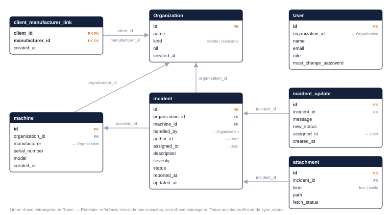
Na variante demo, o telemóvel guarda os dados de todas as organizações, por isso as consultas ao Room aplicam as mesmas regras de visibilidade que o servidor:
| Perfil | Ocorrências | Máquinas |
|---|---|---|
| Cliente | as da sua organização | as da sua organização |
| Assistência e gestor do fabricante | as que o fabricante trata | as que fabricou |
| Técnico | as que reportou ou que lhe foram atribuídas | as que o fabricante fabricou |
O Repository guarda o utilizador com sessão iniciada num StateFlow (signedIn). Cada lista parte desse utilizador através de whenSignedIn, que usa flatMapLatest: quando o utilizador muda, a consulta anterior é cancelada e começa outra, e sem sessão a lista fica vazia. Do perfil sai um Scope com três valores, o cliente, o fabricante e o técnico (User.scope, em data/model/User.kt), e o Repository passa-os às consultas dos DAO: observeVisibleWithMachine para as ocorrências e observeVisible para as máquinas. Na cláusula WHERE, cada valor que não é null restringe a lista, por isso a mesma consulta serve todos os perfis.
Ligar as listas ao StateFlow, em vez de ler o utilizador uma única vez, também resolve o regresso da aplicação depois de o Android terminar o processo: os ecrãs são recriados antes de a sessão ser restaurada, e as listas preenchem-se assim que ela fica disponível.
app/src/main/java/com/example/fixtag/
├── api/ Retrofit: pedidos, respostas (DTO) e tokens
├── data/ Room, Repository, sincronização e dados de exemplo
│ └── model/ entidades e DAO
└── ui/
├── login/ LoginActivity e o seu ViewModel
├── main/ MainActivity e a navegação por separadores
├── fragments/ um fragmento por ecrã
├── viewmodels/ um ViewModel por ecrã
├── adapters/ adaptadores das listas
└── dialogs/ seleção de máquina e de organização
A aplicação segue a arquitetura MVVM recomendada no guia de arquitetura do Android. O fragmento só trata da interface: observa o estado que o ViewModel expõe, num StateFlow, e passa-lhe as ações do utilizador, como tocar em guardar. Não valida dados nem acede à base de dados.
O ViewModel guarda o estado do ecrã, que sobrevive a rotações, e contém a lógica: valida os formulários, decide que erro mostrar e pede ao Repository para guardar. Os ViewModels dos formulários partilham uma classe base, InputBaseViewModel, com o estado do formulário (a editar, a guardar, guardado) e o canal das mensagens de erro. Recebem o Repository pelo construtor, através de fábricas como a AppViewModelFactory.
O Repository é o único que fala com o Room e com a API, e é ele que decide se uma operação fica no telemóvel ou passa pelo servidor, conforme a variante. É criado uma só vez, na classe FixTag (a Application), junto com a base de dados e o WorkManager. Assim, a interface, a lógica e o acesso aos dados ficam separados, como pede o enunciado: mudar a forma de guardar os dados não obriga a mexer nos ecrãs, e mudar um ecrã não obriga a mexer nos dados.
| Formulário | O que é validado |
|---|---|
| Ocorrência | máquina escolhida; descrição não vazia |
| Máquina | cliente escolhido; modelo não vazio; número de série não vazio e ainda não registado |
| Cliente | nome não vazio; NIF com 9 dígitos e dígito de controlo válido; NIF que não seja de um fabricante; nome e e-mail válidos do gestor; e-mail ainda sem conta |
| Conta | nome não vazio; e-mail válido e ainda sem conta; perfil escolhido |
| Alteração da palavra-passe | palavra-passe atual correta; a nova com pelo menos 8 caracteres e diferente da atual |
Os erros aparecem no próprio campo e o botão de guardar fica sempre ativo, por isso cada tentativa volta a validar. Os erros que não pertencem a nenhum campo, como a falta de ligação ao servidor, aparecem numa mensagem.
Os erros previsíveis não chegam à interface como exceções. Os pedidos à API correm em corrotinas, dentro de try/catch, e o Repository devolve um resultado tipado. Por exemplo, registerClient devolve um Registration (Registered, Linked, NifIsAManufacturer, EmailTaken ou Failed) e changePassword devolve um PasswordChange; o ViewModel converte cada caso no erro do campo certo ou numa mensagem. As mensagens que não pertencem a nenhum campo passam por um Channel, para aparecerem uma só vez e não se repetirem depois de rodar o ecrã.
Na sincronização, o SyncWorker trata as falhas de rede e do servidor pedindo ao WorkManager para tentar outra vez (secção 4.3), e um anexo cujo ficheiro já não existe é apagado, em vez de impedir o envio dos outros. As escritas que tocam em várias tabelas são transações, por isso uma falha a meio não deixa dados incompletos.
A interface conta com componentes Material 3, um tema de fácil visibilidade e com contornos de modo a que os elementos de principal interação sobressaiam.
Na variante demo, escolhe-se o tipo de organização e depois um dos perfis de exemplo. Na variante full, entra-se com e-mail e palavra-passe, e quem ainda tem a palavra-passe temporária tem de a mudar antes de continuar.
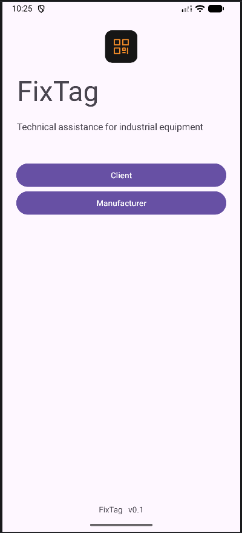
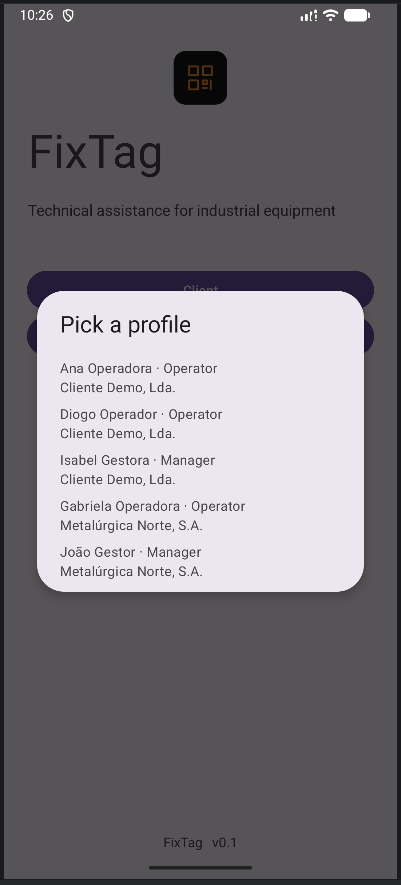
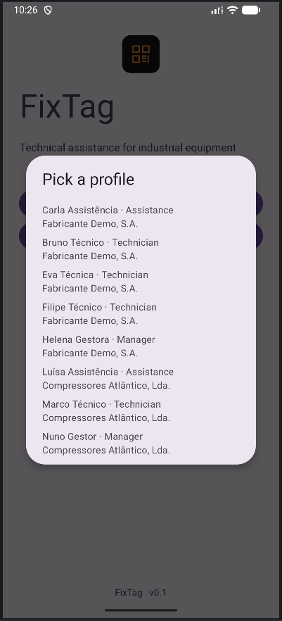
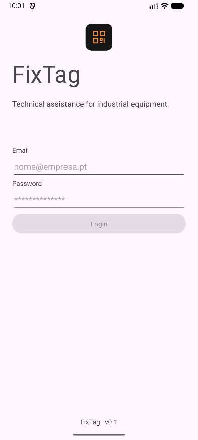
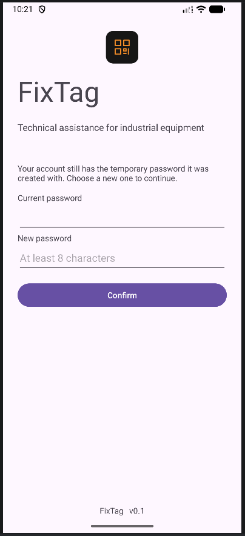
Cada perfil vê apenas as ocorrências a que tem acesso (secção 5.2). Sem rede, a faixa no topo indica quantos registos faltam enviar. O mesmo formulário serve para criar e para editar uma ocorrência; a figura 10 mostra-o a editar, em modo escuro, que a aplicação segue a partir da definição do sistema.
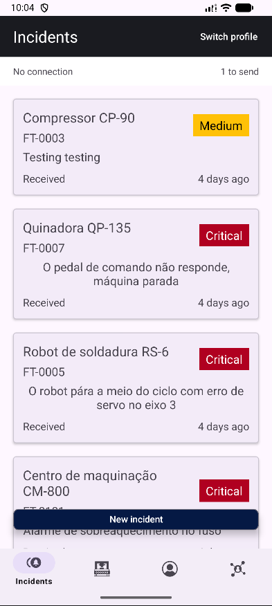
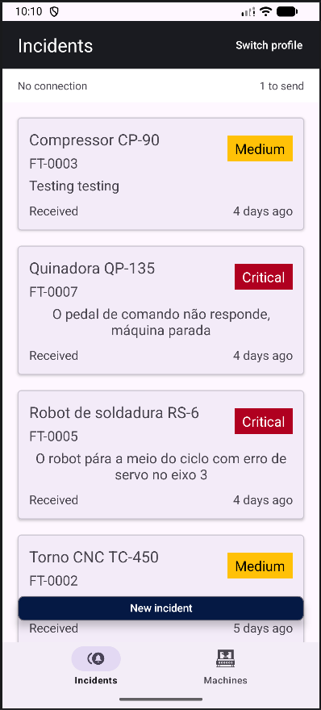
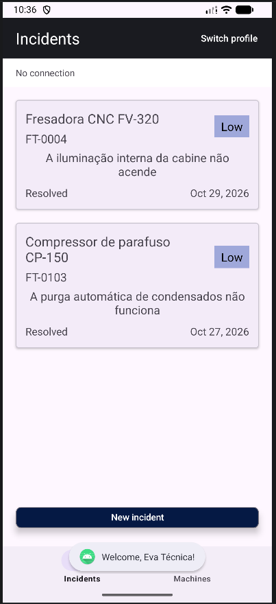
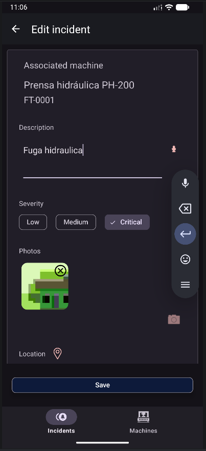
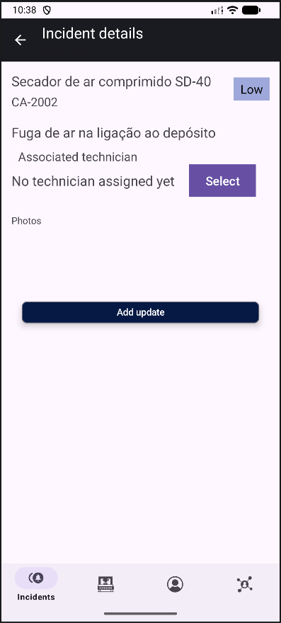
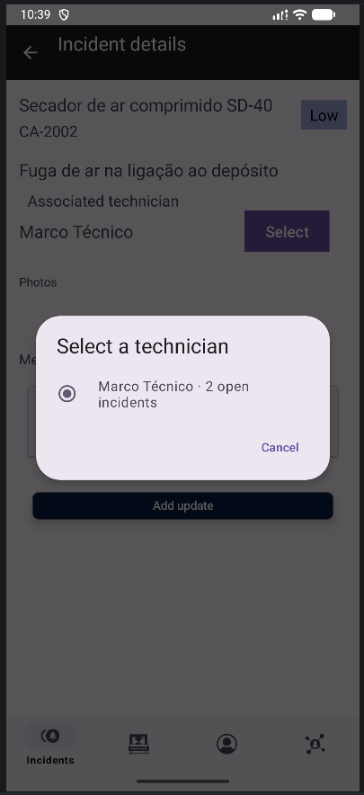
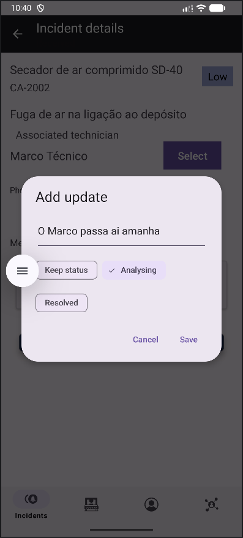
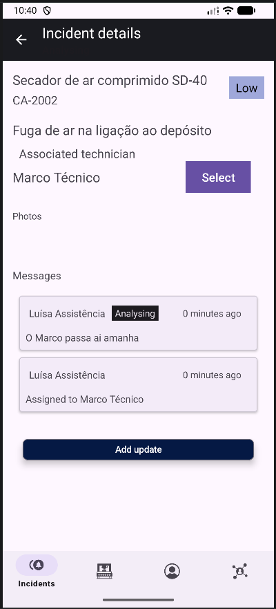
O gestor do fabricante regista máquinas, clientes e contas. O que ainda não foi enviado ao servidor pode ser eliminado, depois de uma confirmação.
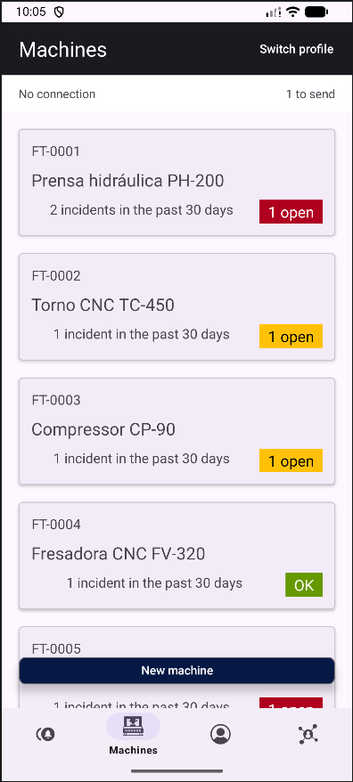
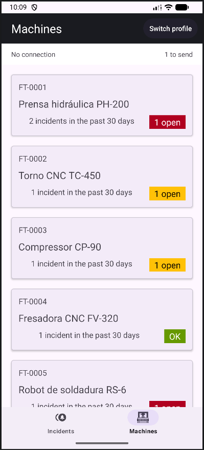
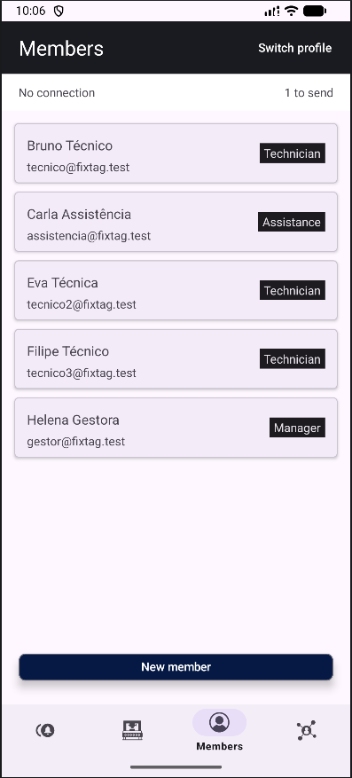
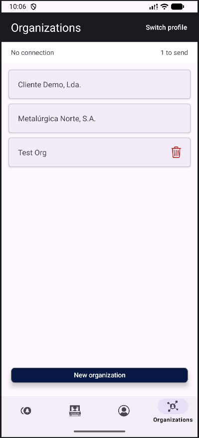
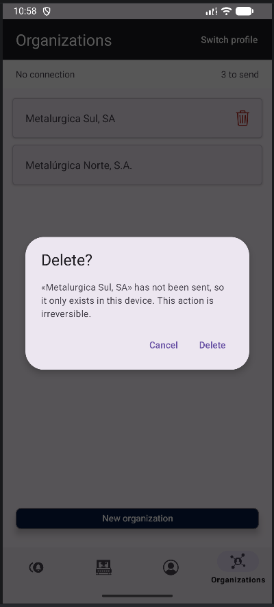
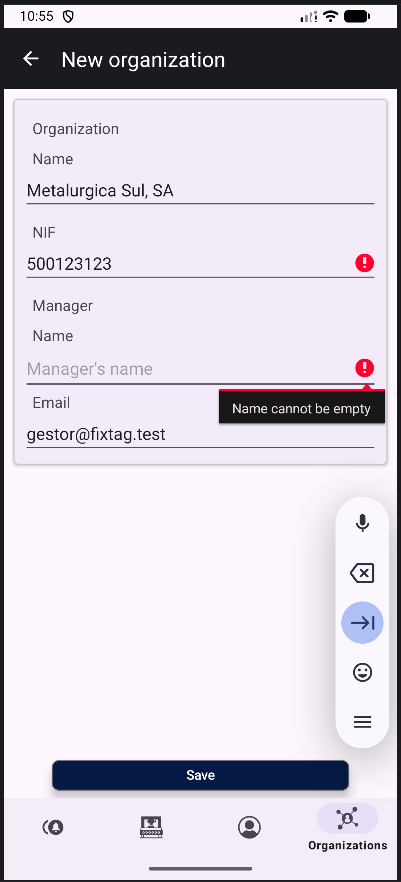
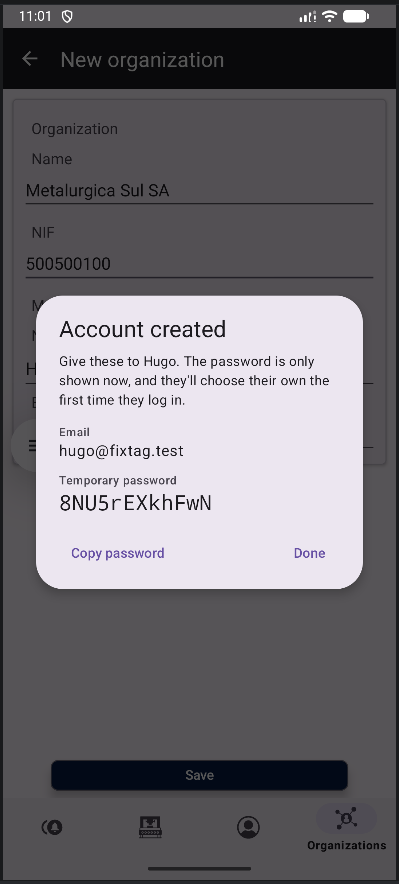
demo e full, com BuildConfig.OFFLINE_DEMO. A variante demo cumpre o enunciado tal como está, com tudo local e sem servidor nem contas; a full é a base das entregas seguintes. Partilham todo o código, e a constante só muda o que tem de mudar: o ecrã de entrada, o registo de clientes e de contas, e se há sincronização.| Funcionalidade | Onde |
|---|---|
| Sincronização com a API (variante full) | data/SyncWorker.kt, data/Repository.kt |
| Fotos e gravações de áudio nas ocorrências | NewIncidentFragment, files/attachments/ |
| Localização GPS | Google Play Services Location, em NewIncidentFragment |
| Vários fabricantes e clientes, com perfis diferentes | secção 5.2 |
| Duas línguas, português e inglês | values-pt/, values/ |
| Modo claro e escuro, conforme o sistema | values-night/, figura 10 |
| Testes automatizados | secção 11 |
A sincronização é a funcionalidade adicional com mais peso: permite que várias pessoas, em telemóveis diferentes, trabalhem nas mesmas ocorrências, sem que a aplicação deixe de funcionar sem rede. As fotos, o áudio e a localização dão ao fabricante o contexto que hoje se perde em mensagens soltas. Os testes automatizados verificam os dados de exemplo e o que cada perfil pode ver.
| Teste | Tipo | O que verifica |
|---|---|---|
DemoSeedRulesTest |
unitário (JVM) | que os dados de exemplo cumprem as regras do domínio |
DatabaseTest |
instrumentado | escrever e ler organizações, máquinas e utilizadores nos DAO |
DemoSeedTest |
instrumentado | que cada perfil vê o que o servidor lhe enviaria |
Os 6 testes unitários passam: os 5 de DemoSeedRulesTest e o exemplo criado pelo Android Studio (gradlew testDemoDebugUnitTest, a 7/11/2026). Os testes instrumentados (DatabaseTest e DemoSeedTest) passam, com a sua execução confirmada em Medium Phone API 37.0.
DemoSeedRulesTest e DemoSeedTest verificam isso.Uuid de uma consulta é passado como BLOB. O SQLite nunca considera iguais um texto e um BLOB, por isso a consulta não devolvia nada, sem dar erro. A solução foi passar o técnico à consulta como texto (scope.technician?.toString()).NavHostFragment, o fragmento de login ficou sem layout, e o onViewCreated nunca corria. Além disso, entrar não levava ao ecrã seguinte. A solução foi dar o layout ao fragmento (Fragment(R.layout.fragment_login)) e decidir a navegação num único sítio, o LoginViewModel.StateFlow não emite um valor igual ao que já tem, por isso tocar outra vez em guardar com o mesmo erro não mostrava nada. O estado dos formulários passou a ser comparado por identidade (FormState, em InputBaseViewModel.kt).StateFlow com o utilizador (secção 5.2).Algumas destas dificuldades foram resolvidas com a ajuda das revisões feitas com IA, indicadas na secção 13.
Ferramenta: Claude (Anthropic), através do Claude Code.
| Parte | O que foi gerado | Ficheiros principais |
|---|---|---|
Servidor (backend/) |
todo o código, os testes e a documentação da API, como declarado ao docente | backend/ |
Mudança para multi-tenant |
snippets sobre a mudança para arquitetura multi-tenant a nível de dados, filtragem de dados por perfil, de modo a espelhar o que acontece no backend |
Helpers.kt, NewMembersFragment, NewOrganizationsFragment, Repository, ApiClient |
| Este relatório | o modelo (estrutura, formatação, script de exportação e o diagrama da figura 1) | docs/report/ |
Ao longo do último ano e meio, quer a nível pessoal que a nível profissional tenho vindo a olhar para este tipo de ferramentas (IA), como muito mais do que um mero chatbot. Por vezes aplico uma dinâmica de colega de equipa como se fosse alguém com quem estivesse a programar em par, por vezes recorro de modo a descobrir onde está o bug, outras vezes dá jeito simplesmente poder trocar ideias de forma objetiva.
Neste caso aplicam-se todas as opções, mas de maneira diferente daquilo que tem sido o meu uso normal deste tipo de ferramentas. O objetivo traçado desde início tinha sido: o Claude ficava responsável pelo desenvolvimento da API porque esta tecnicamente fica fora do âmbito da disciplina, a tecnologia escolhida para a mesma foi de acordo com a minha experiência dado que, entre projetos pessoais e profissionais, já tenho vários anos de experiência com Rust e algumas das bibliotecas escolhidas nesse lado.
Do lado da aplicação, escolhi propositadamente o Kotlin porque a minha experiência passada com Android tinha sido exclusivamente Java e React/Native, como nem sempre consegui encontrar explicações sobre o que procurava em motores de busca, acabei por recorrer ao Claude para me ajudar a perceber onde estava o problema em questão, ou para conseguir chegar ao objetivo em mente mais rapidamente.
Todo o código gerado que tenha sido usado foi testado e estudado de acordo com o objetivo do trabalho de modo a ser compreendido.
| Biblioteca | Para quê |
|---|---|
| Room | base de dados local |
| DataStore (Preferences) | sessão da variante demo |
| WorkManager | sincronização em segundo plano |
| Navigation | navegação entre fragmentos |
| Material Components | interface (Material 3) |
| Retrofit, OkHttp e Gson | pedidos à API e conversão de JSON |
| Coil | carregar as fotos dos anexos |
| Play Services Location | localização das ocorrências |
| Kotlin Coroutines | operações assíncronas e Flow |
Esta entrega cumpre os requisitos obrigatórios e o ciclo completo de gestão das ocorrências, com o Room como armazenamento principal e sem depender de rede. Em relação à apresentação do trabalho de 27/10 e ao que foi demonstrado, junta vários fabricantes e clientes com perfis diferentes, a atribuição de técnicos, a edição de ocorrências, a criação de contas com palavra-passe temporária e a variante full, que sincroniza com o servidor.
Ficaram de fora as migrações explícitas do esquema (secção 4.2), a eliminação de registos que já estão no servidor, que precisa de uma regra no servidor sobre quem o pode fazer, e a opção de sincronizar só por Wi-Fi.
A entrega do mini-projeto coletivo (de forma individual) alarga novamento o âmbito, desta vez aos cidadãos, que poderão reportar problemas em espaços públicos, com novos perfis e alterações ao modelo de dados, e acrescenta um mapa das ocorrências em curso, filtrado por perfil, a partir da localização que cada ocorrência já guarda.
docs/protocolo-experimental.pdf).